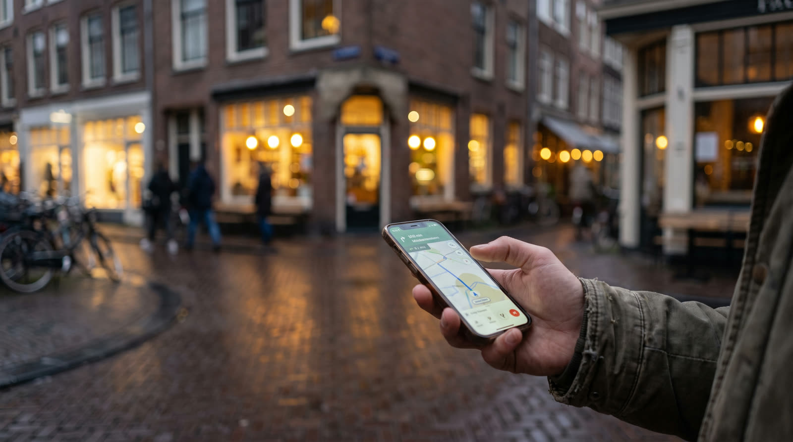

Home · Website & SEO · SEO Den Bosch
Gevonden worden door klanten in 's-Hertogenbosch en omgeving. We zitten zelf aan de Bruistensingel en doen SEO voor een vaste prijs: €79 per maand, met elke maand nieuwe pagina's en een rapport.
Kort antwoord
Het zorgt dat je bedrijf in Google verschijnt als mensen in Den Bosch en omgeving zoeken naar wat jij doet. Bij Skyline Digital betekent dat: de techniek van je site op orde, je Google Bedrijfsprofiel goed ingevuld en elke maand nieuwe pagina's rond de zoekvragen van jouw klanten. Met het Radar-abonnement kost dat €79 per maand, inclusief maandrapport.

Lokale SEO
Klanten zoeken zelden op je bedrijfsnaam. Ze zoeken op wat ze nodig hebben, met 'Den Bosch', ''s-Hertogenbosch' of hun wijk erbij.
Voor die zoekopdrachten toont Google lokale resultaten. Volgens Google zelf hangen die vooral af van relevantie, afstand en bekendheid: hoe goed je profiel en site passen bij de zoekvraag, hoe dichtbij je zit en hoe bekend je bedrijf is. Aan de eerste en de laatste kun je werken.
Wat je krijgt
Vaste prijzen, geen uurtje-factuurtje. Alle pakketten staan ook op onze prijzenpagina.
Elke maand 4 blogs en 2 locatiepagina's rond de zoekwoorden van jouw klanten, plus technische SEO, Search Console en een maandelijkse rapportage.
Bij een Skyline-website (€575 eenmalig of €49 per maand) staat de basis meteen goed: technische SEO, je Google Bedrijfsprofiel, zes locatiepagina's voor je regio en een gekoppelde Search Console.
Website én vindbaarheid in één abonnement: de Skyline-website met basis-SEO, Radar, hosting, onderhoud en een maandrapport.
Een vaste plek bovenaan in Google kan niemand beloven; Google waarschuwt daar zelf voor. Wat je wel krijgt: elke maand zichtbaar werk en een eerlijk rapport.
Hoe wij het aanpakken
Op skylinedigital.nl werken we precies zoals voor klanten: een eigen pagina per plaats, zoals Den Bosch, Rosmalen en Vught, en blogs die één vraag van ondernemers goed beantwoorden.
Het traject
Bij ons aan de Bruistensingel, bij jou op locatie of via video. We bespreken wat je doet, waar je klanten zitten en waarop ze zoeken.
Technische SEO, titels en omschrijvingen per pagina, je Google Bedrijfsprofiel en Search Console.
4 blogs en 2 locatiepagina's per maand, elk rond een eigen zoekvraag van jouw klanten.
Elke maand zie je wat er gedaan is en hoe je gevonden wordt. Daarop kiezen we de onderwerpen voor de volgende maand.
Voorbeelden
Twee projecten uit ons portfolio waarbij lokale SEO vanaf de bouw meegenomen is.
Een elektrotechnisch installatiebedrijf uit Nijkerk, gebouwd om gevonden te worden in Nijkerk, Amersfoort, Barneveld en de regio, met duidelijke pagina's per specialisme.
Een complete website voor een specialist in tegelwerk, met een uitgebreide projectgalerij en optimalisatie voor lokale vindbaarheid in de regio.
Zoek je ook een nieuwe website? Bekijk website laten maken in Den Bosch.
Veelgestelde vragen
Het Radar-abonnement kost €79 per maand, met 4 blogs en 2 locatiepagina's per maand en een maandrapport. Basis-SEO zit in het Skyline-websitepakket (€575 eenmalig of €49 per maand), en website plus Radar samen kost €119 per maand.
Dat verschilt per branche en per hoeveelheid concurrentie, en niemand kan een termijn garanderen. Google raadt aan om een SEO-bureau te vragen welke resultaten je in welke tijd mag verwachten; wij laten je de voortgang elke maand zien in het rapport.
Nee. Volgens Google kan niemand een eerste plek garanderen, en een bureau dat dat wel belooft, kun je beter laten lopen. Wij beloven wel elke maand nieuw werk aan je vindbaarheid.
Lokale SEO is alles wat je doet om gevonden te worden door klanten in je eigen omgeving: je Google Bedrijfsprofiel, je plaats en werkgebied op je site en reviews van klanten. Lees ook onze tips voor lokale SEO.
Ja, we zitten aan de Bruistensingel 500 in 's-Hertogenbosch. Afspreken kan daar, bij jou op locatie of via video.
Ja. We werken voor ondernemers in heel Nederland, bijvoorbeeld in Oss, Waalwijk en Uden. Bekijk ook alle regio's.
Lees verder: Website & SEO · zichtbaar worden in ChatGPT en Google AI · websites voor installateurs
Bronnen: Google Bedrijfsprofiel Help: positie in lokale zoekresultaten verbeteren · Google Search Central: Do you need an SEO?
Vertel ons wat je doet en waar je klanten zitten. Je hoort binnen één werkdag van ons.